El peso y la capacidad
En este capítulo conocerás al gramo y al litro
¿Qué es la capacidad y el peso y para qué nos sirven?
La capacidad y el peso son unidades de medida diferentes que nos sirven para medir o calcular cuánto líquido tiene un objeto o cuánto peso tiene un objeto.
Observa:
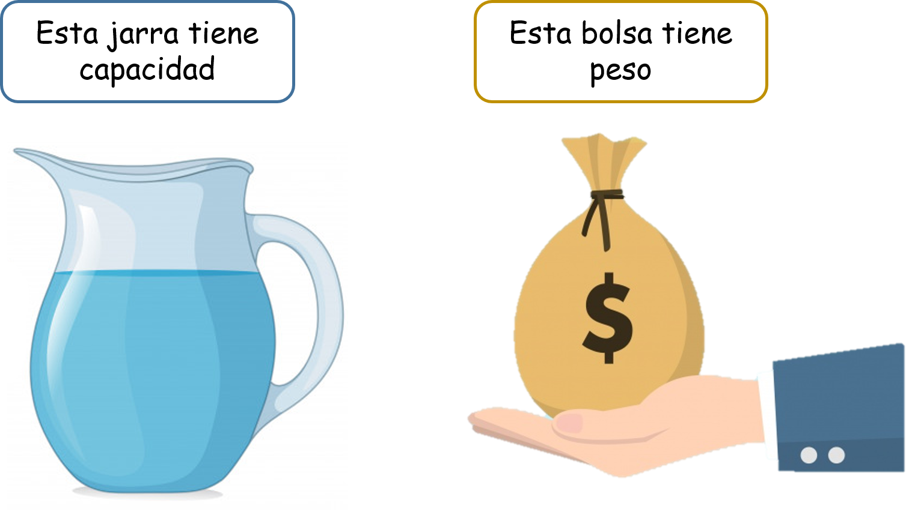- ¿Qué vamos a aprender?
- ¿Qué es la capacidad y qué objetos tienen capacidad?
- ¿Qué es el peso y qué objetos tienen peso?
(1)¿Qué es la capacidad y qué objetos tienen capacidad?
La capacidad de un objeto es la cantidad de líquido que puede contener dentro de sí mismo. Imagínate por ejemplo objetos como estos:
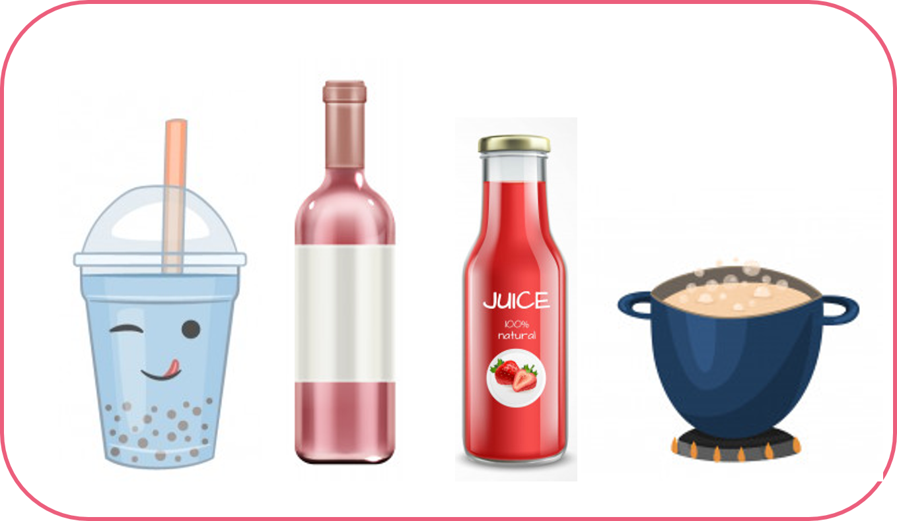Observa que cada uno de estos objetos contiene una cantidad distinta de líquido, y esto se debe a su tamaño, dependiendo del tamaño del recipiente su capacidad será mayor, menor o igual a otros recipientes.
Para medir las cosas que nos rodean los seres humanos usamos diferentes instrumentos y diferentes unidades de medida, piensa por ejemplo en el metro que usan las personas que cosen ropa, o las personas que trabajan con madera y la miden antes de cortarla, o piensa en los estudiantes que usan la regla que tiene centímetros para medir un espacio en sus cuadernos.
Para medir la capacidad de un objeto usamos la unidad de medida que se llama El litro y se simboliza con una “L”. Si observas cosas que tienes en tu casa como por ejemplo una caja de leche verás que su medida está en litros, así mismo las botellas de jugo, las botellas de agua, las ollas en las que cocinamos, etc.
A. Comparación de capacidades:
Para comparar la capacidad de diferentes recipientes vamos a necesitar de los símbolos mayor que, menor que o igual a, recordemoslos con esta pequeña historia:
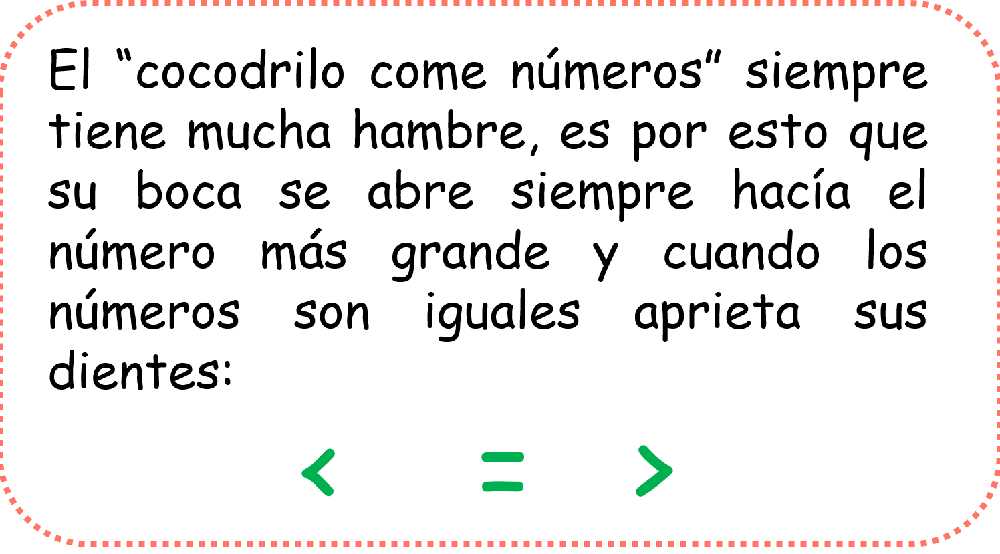"">Usando las bocas del cocodrilo podremos realizar la comparación entre dos o más capacidades de diferentes objetos.
Observa:
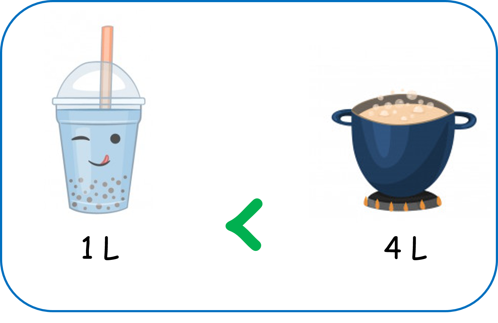Observa estos dos recipientes que nos muestra la imagen, un vaso y una olla, el vaso tiene capacidad de un litro y la olla tiene capacidad de cuatro litros. La boca del cocodrilo se abre hacia la olla ya que es la olla quién tiene más capacidad para contener líquido dentro de sí misma.
Miremos otro ejemplo:
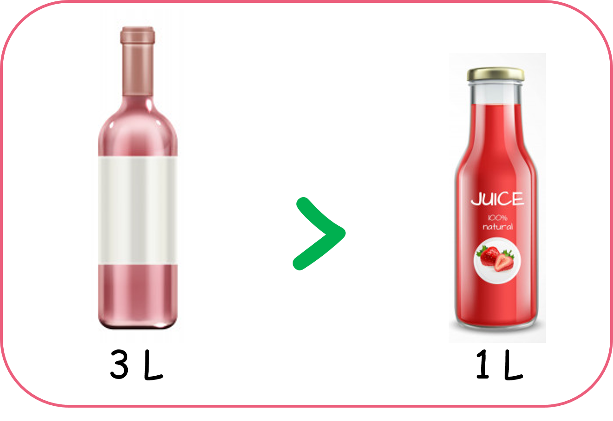Observa que ahora la boca de cocodrilo se abre hacia la botella de vino ya que esta tiene capacidad para tres litros, mientras que la botella de jugo tiene una capacidad solo para un litro, es decir, tiene una capacidad menor.
Veamos ahora qué ocurre cuando las capacidades de los recipientes son iguales:
Observa:
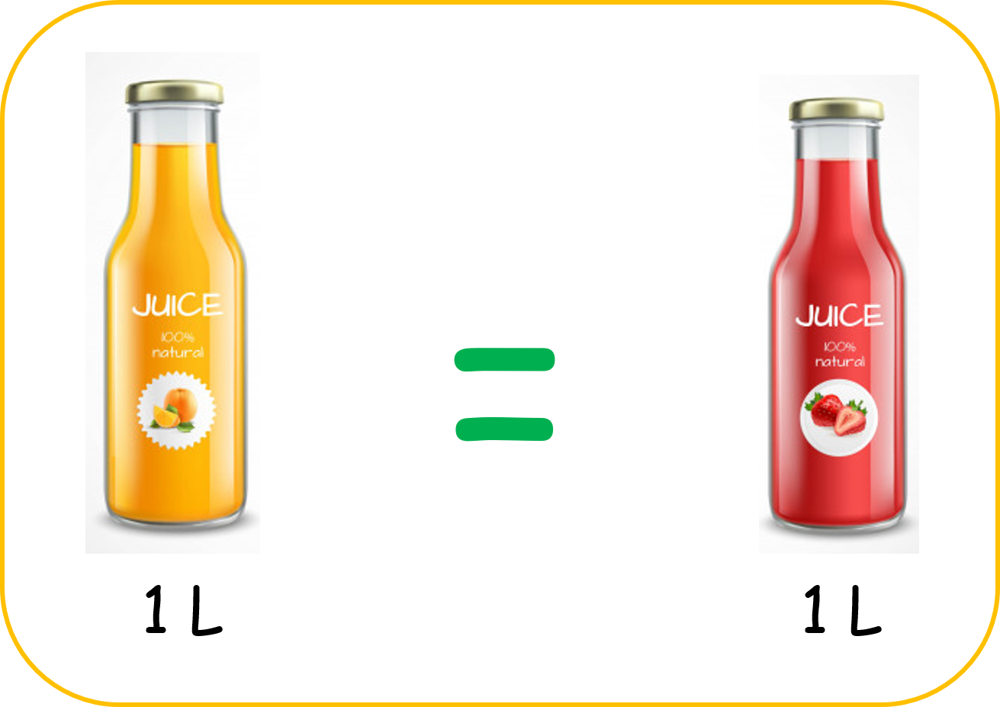Observa que las dos botellas tiene capacidad para un litro cada una y cuando esto pasa usamos el signo igual.
(2)¿Qué es el peso y qué objetos tienen peso?
Los objetos y las personas tenemos peso, es por esto que al tomar algo podemos decir “pesa poco o pesa mucho”. Para medir el peso los seres humanos usamos la unidad de medida llamada gramo y se simboliza a sí “g”, aunque es más común que te encuentres con un múltiplo del gramo, es decir con una unidad más grande que se llama el Kilogramo y se simboliza así “kg”. Casi todas las cosas que compramos en el supermercado son pesadas en Kilogramos e incluso nosotros mismos somos pesados en kilogramos.
Observa la siguientes imagen:
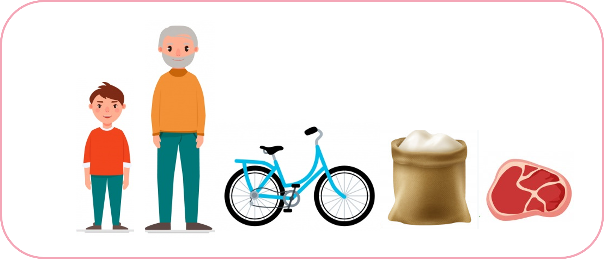Todo lo que ves en esta imagen tiene un peso.
A. Comparación de pesos:
Para comparar la capacidad de diferentes recipientes vamos a necesitar de los símbolos mayor que, menor que o igual a.
Observa:
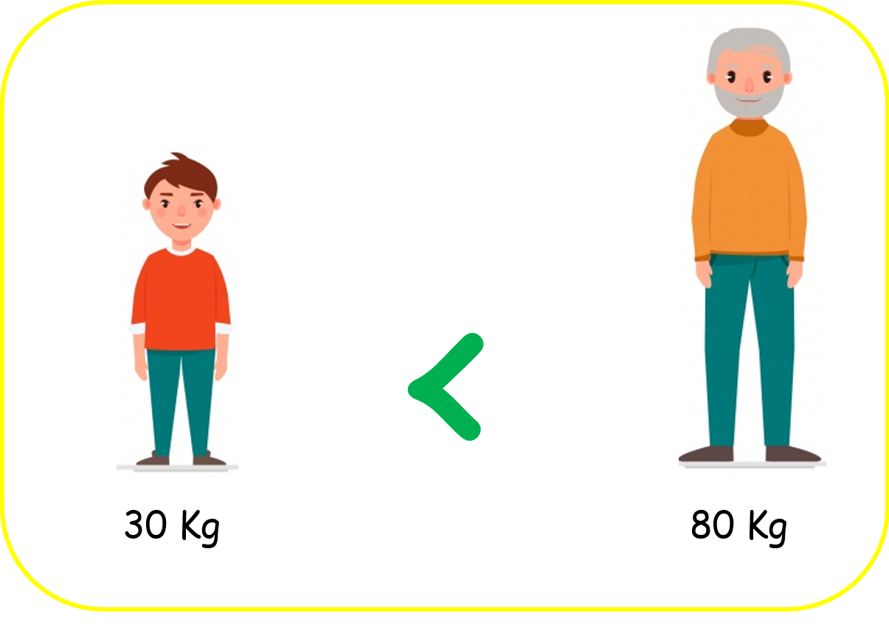Un niño pesa menos que un adulto, por eso la boca del cocodrilo se abre hacia el adulto.
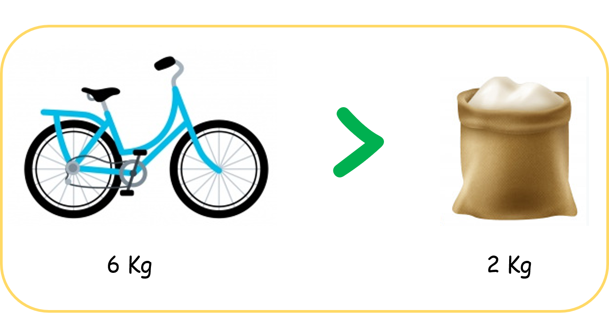Una bici pesa más que una bolsa con harina, por eso la boca del cocodrilo se abre hacia la bicicleta.
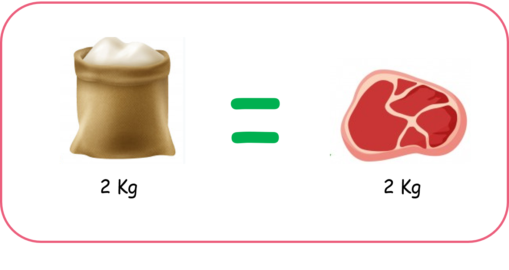Cuando tienes dos cosas que pesan lo mismo usamos el signo igual, como lo muestra la imagen.
Para pesar objetos se usa una balanza, que está formada por un eje y dos platillos en sus extremos que se pueden inclinar según el peso que sostienen, la parte más inclinada es la que más pesa.
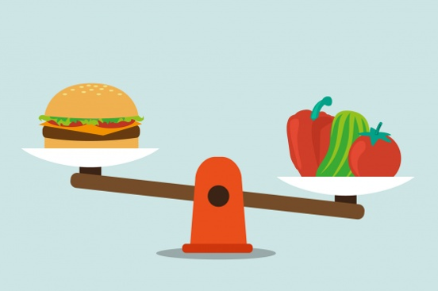Para pesar personas se usa una báscula, como la que usa tu doctor cuando quiere saber si subiste o bajaste de peso.
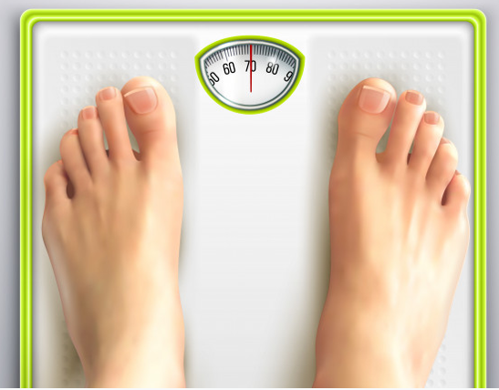Material extra para trabajar el tema de capacidad y peso:
En el siguiente enlace podrás encontrar diferentes fichas para trabajar las unidades de medida a través de la observación, creadas por Educapeques.com
Vídeos orientativos:
En el vídeo “Medidas de peso y capacidad: Kilogramo y Litro” de Aula365 - Los creadores, encontrarás una explicación divertida acerca de la diferencia entre el peso y la capacidad